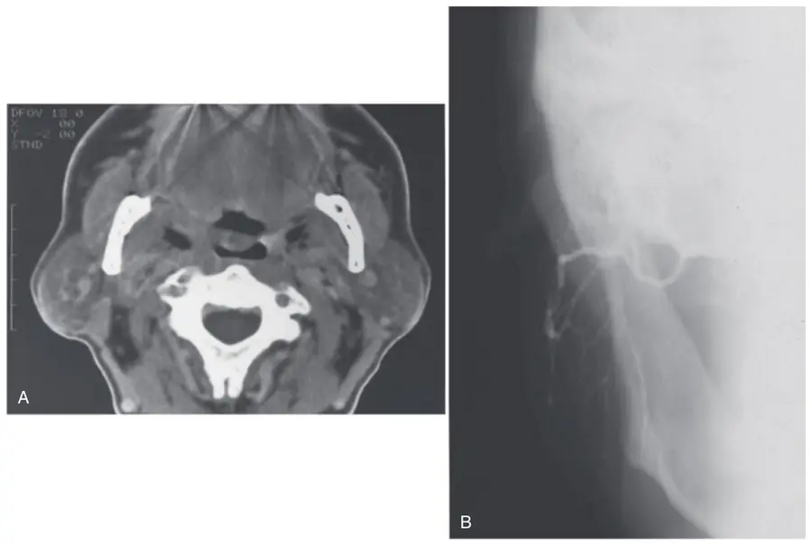
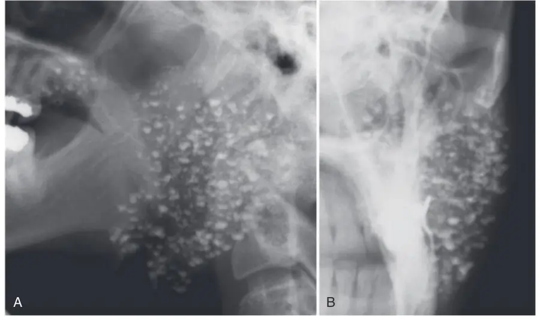

نسخه استخراجشده؛ ترجمه یا تأیید علمی انجام نشده است. وضعیت: captured
چرا این سه وضعیت را کنار هم میگذاریم: «سه وضعیت — سیالادنوز، سیالادنیت خودایمن، و سیالادنیت پس از پرتو — از اینرو مهماند که اغلب با علائم و نشانههایی شبیه وضعیتهای انسدادی غدد بزاقی مراجعه میکنند و بنابراین باید از آنها تفکیک شوند.»

و سیالادنوز چیست؟ «بزرگ شدن غیرنئوپلاستیک و غیرالتهابی غدهی بزاقی، عمدتاً غدد پاروتید.» و «خودِ بزرگ شدن بهدلیل هایپرتروفی آسینیهای بزاقی است».
و علتهایش، تو را به بدن بیمار میبرند: «انواعی از اختلالات غدد درونریز مانند دیابت شیرین، اختلال مصرف الکل، و داروهای معینی مانند داروهای ضدالتهاب غیراستروئیدی.»
و سه ویژگی بالینیاش: «چون این وضعیت ماهیت سیستمیک دارد، درگیری دوطرفهی غدد شایع است. بزرگ شدن معمولاً مزمن یا عودکننده و تا حد زیادی بدون درد است.» و بیماران اغلب از خشکی دهان شکایت میکنند.
و نشانهی سیالوگرافیک اختصاصیاش: «سیالوگرافی میتواند یافتههای اختصاصیتری نشان دهد مانند باز شدن پنجهای (splaying) یا جابهجایی مجاری با قطر در غیر این صورت طبیعی. این ظاهر از آنجا میآید که ساختارهای مجرایی توسط پارانشیم هایپرتروفیه به کنار رانده میشوند.»
و مدیریتش یک جمله است: «مدیریت سیالادنوز به شناسایی و مدیریت علت اولیه متکی است.» و اقدامات موضعی: افزایش مایعات، ماساژ، و سیالاگوگ.
و حالا سندرم شوگرن — با جایگاهی که باید بدانی: «سندرم شوگرن دومین وضعیت خودایمن شایع پس از آرتریت روماتوئید است.» و «تقریباً ۹۰٪ موارد در زنان و در دههی چهارم تا ششم زندگی تشخیص داده میشوند».
و سازوکارش: «بیماری خودایمن غدد برونریز که عمدتاً غدد بزاقی و اشکی را درگیر میکند و به کاهش قابل توجه ترشحاتشان میانجامد.» و «با انفیلترای لنفوسیتی پریداکتال مشخص میشود که آسینیهای غدد برونریز را تخریب میکند».
و واژهی «سیکا» به خشکی چشم و دهان اشاره دارد. و دو شکل دارد: اولیه که تنها غدد بزاقی و اشکی را در بر میگیرد (همان سندرم سیکا)، و ثانویه که با دیگر بیماریهای خودایمن بافت همبند مانند آرتریت روماتوئید یا لوپوس اریتماتوی سیستمیک همراه است.
و دو پیامد که باید بشناسی: «انفیلترای لنفوسیتی میتواند یک تودهی جامد درون پارانشیم غده — معمولاً پاروتید — بسازد که به نام ضایعهی لنفواپیتلیال خوشخیم (BLEL) شناخته میشود.» و مهمتر: «بیماران با سندرم شوگرن در خطر بیشتر ابتلا به لنفوم MALT — زیرگروهی از لنفوم غیرهوچکینی — هستند.»
و حالا مشهورترین توالی تصویری این یونیت — دو مرحله:
و یک آزمون هوشمندانه که ماهیت این تجمعات را لو میدهد: «معمولاً این تجمعات مادهی حاجب پس از تجویز سیالاگوگ باقی میمانند، که نشانهای است از اینکه ماده بیرون از مجرا انباشته شده است.»
و در مراحل دیرتر: MDCT «غدد بزرگ و متراکم» نشان میدهد، و روی MRI «نواحی کروی خوشمرز با سیگنال پایین T1 و سیگنال بالای T2» در سراسر غده دیده میشوند. و مدیریت «به سمت تسکین علائم بیمار» میرود: محرکهای بزاقی، افزایش مایعات، و بزاق و اشک مصنوعی.
این وضعیت از دو مسیر میآید: «هم پس از پرتودرمانی با پرتو خارجی سر و گردن، و هم پس از تجویز وریدی ید رادیواکتیو ۱۳۱ برای مدیریت وضعیتهای معینی از تیروئید.»

و زنجیرهی آسیب: «پس از هر دو نوع درمان، یک واکنش التهابی شدید در غدد بزاقی پدید میآید، و مرگ سلول پارانشیمی و فیبروز مجرایی به فشار بر ساختارهای مجرایی و انسداد آنها میانجامد.»
و چرا پاروتید و چرا دوطرفه؟ «تظاهر معمول، تورم دوطرفهی حساس غدد پاروتید است، بهدلیل شمار زیاد سلولهای تولیدکنندهی ترشح سروزی — که پرتوحساسترین سلول ترشحی درون غدد بزاقیاند.»
و سیر بیماری: این تورم «معمولاً با خشکی دهان پیشرونده و سرانجام آتروفی و فیبروز غده همراه است».
و آنچه سیالوگرافی در دو مرحله نشان میدهد:
و پزشکی هستهای در مراحل اولیه: «جذب طبیعی ولی دفع تأخیری TPT.»
و مدیریت، یک اصل و یک استثنا دارد: «بهترین مدیریت این وضعیت، پیشگیری است. در موارد پرتودرمانی با پرتو خارجی، باید تدابیری برای محافظت بافت غده از دوز تومورکش اندیشیده شود.» و نکتهی زیبایش: «این نواحی محافظتشدهی غده میتوانند بعدها دچار هایپرتروفی شوند و کاهش جریان بزاقی از نواحی پرتودیده را جبران کنند.»
و استثنا: «متأسفانه، محافظت در درمان با ید ۱۳۱ ممکن نیست، ولی اقدامات موضعی — افزایش مایعات و جایگزینهای بزاق — در تسکین علائم بیمار کمککنندهاند.»
و حالا خشکی دهان — واژهای که در هر سه تقلیدکننده تکرار شد: «زروستومیا، یا احساس ذهنی خشکی دهان.» و بیماران میتوانند از احساس سوزش یا زخمی بودن دهان، و نیز تغییر چشایی یا دشواری در بلع شکایت کنند.
و نشانههای عینیاش که در معاینه میبینی: زبان اریتماتوی شیاردار، پوسیدگی سرویکال، و عفونتهای عودکنندهی کاندیدا آلبیکنس.
و یک تفکیک اصطلاحی دقیق: «کاهش عینی در مقدار بزاق یا هایپوسالیویشن میتواند از راه آزمونهای اختصاصی تأیید شود.» یعنی زروستومیا احساس بیمار است و هایپوسالیویشن اندازهگیری توست — و این دو همیشه بر هم منطبق نیستند.
و چرا این درس برای دندانپزشک حیاتی است: «شرایطی که غدد بزاقی و عملکردشان را تحت تأثیر قرار میدهند، مستقیماً دندانها و مخاط را هم تحت تأثیر قرار میدهند. این شرایط اغلب بیماران را به مراجعه به دندانپزشک وامیدارند.»